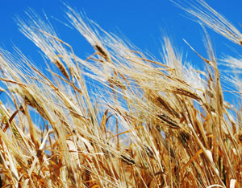

In recent years, there has been a growing concern over thresholds, or tipping points, in nature. For example, scientists worry about when the shrinking population of an endangered species will fall to the point from which it cannot recover. Marine biologists are concerned about the point at which overfishing will trigger the collapse of a fishery.
We know there were social tipping points in earlier civilizations - points at which they were overwhelmed by the forces threatening them. For instance, at some point, the irrigation-related salt buildup in the Sumerian people’s soil overwhelmed their capacity to deal with it. With the Mayans, there came a time when the effects of cutting too many trees and the associated loss of topsoil were simply more than they could manage.
The social tipping points that lead to decline and collapse when societies are overwhelmed by a single threat or by simultaneous multiple threats are not always easily anticipated. As a general matter, more economically advanced countries can deal with new threats more effectively than developing countries can. For example, while governments of industrial countries have been able to hold HIV infection rates among adults to under 1 percent, many developing-country governments have failed to do so and are now struggling with much higher infection rates. This is most evident in some southern African countries, where up to 20 percent or more of adults are infected.
A similar situation exists with population growth. While populations in nearly all industrial countries except the United States have stopped growing, rapid growth continues in nearly all the countries of Africa, the Middle East, and the Indian subcontinent. Nearly all of the 80 million people being added to the world population each year are born in the countries least able to support them - countries where natural support systems are already deteriorating in the face of excessive population pressure. In these countries, the risk of state failure is growing.
Some issues seem to exceed even the management skills of the more advanced countries, however. When countries first detected falling underground water tables, it was logical to expect that governments in affected countries would quickly raise water use efficiency and stabilize population in order to stabilize aquifers. Unfortunately, not one country - industrial or developing - has done so. Two failing states where overpumping water and security-threatening water shortages loom large are Pakistan and Yemen.
Although the need to cut carbon emissions has been evident for some time, not one country has succeeded in becoming carbon-neutral. Thus far this has proved too difficult politically for even the most technologically advanced societies. Could rising carbon dioxide levels in the atmosphere prove to be as unmanageable for our early 21st-century civilization as rising salt levels in the soil were for the Sumerians in 4000 B.C.?
Another potentially severe stress on governments is the coming decline in oil production. Although world oil production has exceeded new oil discoveries by a wide margin for more than 20 years, only Sweden and Iceland actually have anything that remotely resembles a plan to effectively cope with a shrinking supply of oil.
This is not an exhaustive inventory of unresolved problems, but it does give a sense of how their number is growing as we fail to solve existing problems even as new ones are being added to the list. Analytically, the challenge is to assess the effects of mounting stresses on the global system. These stresses are perhaps most evident in their effect on food security, which was the weak point of many earlier civilizations that collapsed.
Several converging trends are making it difficult for the world’s farmers to keep up with the growth in food demand. Prominent among these are falling water tables, the growing conversion of cropland to nonfarm uses, and more extreme climate events, including crop-withering heat waves, droughts and floods. As the stresses from these unresolved problems accumulate, weaker governments are beginning to break down.
Compounding these problems, the United States, the world’s breadbasket, has dramatically increased the share of its grain harvest going to fuel ethanol - from 15 percent of the 2005 crop to more than 25 percent of the 2008 crop. This ill-conceived U.S. effort to reduce its oil insecurity helped drive world grain prices to all-time highs by mid-2008, creating unprecedented world food insecurity.
The risk is that these accumulating problems and their consequences will overwhelm more and more governments, leading to widespread state failure and, eventually, the failure of civilization. The countries that top the list of failing states are not particularly surprising. They include Iraq, Sudan, Somalia, Chad, Afghanistan, Haiti and the Democratic Republic of the Congo. And the list grows longer each year, raising a disturbing question: How many failing states will it take before civilization itself fails? No one knows the answer, but it is a question we must ask.
We are in a race between tipping points in nature and our political systems. Can we phase out coal-fired power plants before the melting of the Greenland ice sheet becomes irreversible? Can we gather the political will to halt deforestation in the Amazon before its growing vulnerability to fire takes it to the point of no return? Can we help countries stabilize population before they become failing states?
We have the technologies to restore the Earth’s natural support systems, to eradicate poverty, to stabilize population, and to restructure the world energy economy and stabilize climate. The challenge now is to build the political will to do so. Saving civilization is not a spectator sport. Each of us has a leading role to play.
|
 SIDEWALK FLYING/FLICKR The United States increased the share of its grain harvest going to fuel ethanol - from 15 percent of the 2005 crop to more than 25 percent of the 2008 crop - in an effort to reduce its oil insecurity. However, this increase helped drive world grain prices to all-time highs by mid-2008, creating unprecedented world food insecurity. |
|
|